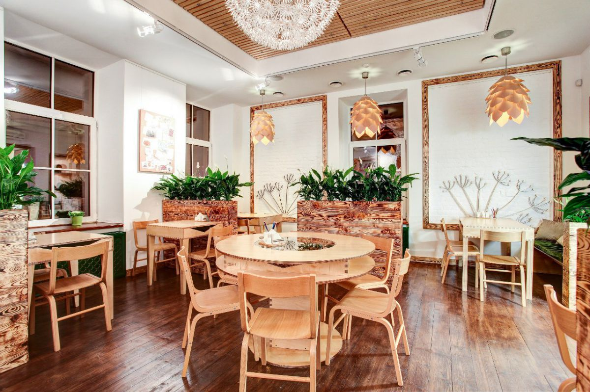
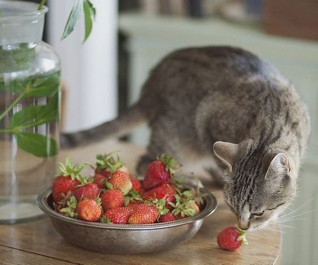
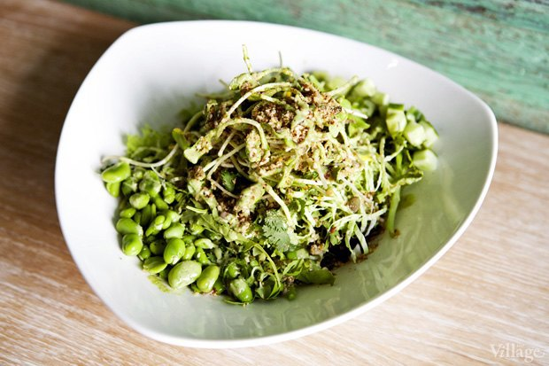

О НАС
Vegat - это котокафе с вегетарианской кухней. Само вегетарианство подоразумевает любовь ко всему живому. Но что может быть лучше, для вегетарианца чем не дорогой обед или перекус с котиком на коленках. Есле же вам просто хочеться попробовать, что-нибудь новое, то в нашем меню есть самые популярные и классические веганские блюда. Опытным же вегетарианцам мы можем предложить великолепную выпечку и тёплую дружественную атмосферу.Здесь много котов, и можно спокойно попить кофеёк!
  Условия посещения VEGAT
- Хорошое содержание котиков стоит дорого, по этому на посещение нашего кафе установлен тариф.Каждый час посящения кафе стоит 500 рублей.
- Котики - существа капризные. Если вы будете насильно их гладить, или днелать, что-то, что им не нравиться, то вам придёться заплатить штраф 1000 рублей, за каждого котика! Однако котики у нас контактные и людей любят. Подождите пару минут и у вас под ногами уже будет лежать маленькое солнышко. Если этого не произойдёт, то вы всегда можете обратиться к рабочим кафе, которые быстро найдут вам котёнка!
- Мы все следим за своим здоровьем, по этому естественно курить в нашем заведении запрещено!
- Вегетарианцы - это люди, которые просто считают насилие над животными проблемой. Это не являеться причиной для того, чтобы их оскорблять, не говоря уже о применении физического насилия. Любые подобные действия будут пресекаться!